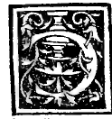
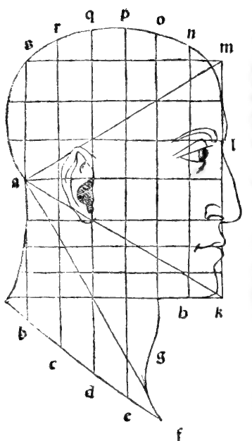

CAPITEL I¶
Von dem Maass und Verhältnissen des menschlichen Körpers, vom Kopf und seinen übrigen Gliedern, <ils Sinnbild der Architektur.

Wir müssen.betrachten, wie Plato in seinem Timäus sagt, wo er von der Natur des Universums handelt: Gott, als er den Menschen bildete, setzte das Haupt ihm auf die Spitze, gleich den Citadellen und Festungen in den Städten, damit es Wächter des ganzen körperlichen Gebäudes, d. h. aller andern unteren Glieder wäre. Und jenes bewaffnete und versah er mit allen nothwendigen Bequemlichkeiten, wie erhellt, mit sieben Schiessscharten, d. h. sieben Höhlungen, durch welche der Verstand die äussern Gegenstände aufzunehmen hätte, und dies sind die zwei Ohren, die zwei Augen, die zwei Nasenlöcher, die siebente der Mund.
Denn, wie die maxima philosophica sagt, nichts ist in dem Geiste, ohne dass es vorher nicht in den Sinnen war. Daher sind der menschlichen Empfindungen fünf, nämlich Sehen, Hören, Riechen, Fühlen und Schmecken, und daher stammt das buchstäbliche Sprichwort, welches sagt: „Wenn das Haupt schmerzt, so leiden auch die übrigen Glieder” nach Art der besagten Festungen in den Städten, wenn sie von den Feinden mit Kriegsmaschinen der Artillerie, Steinwurfmaschinen, Schleudern, Katapulten, Bailisten, Bombarden, Feldgeschützen, Flinten, Hakenbüchsen, Stutzen, Feldschlangen und andern schädlichen Dingen beunruhigt und belästigt werden. Die ganze Stadt empfindet darüber Leid bei grosser Ungewissheit für ihr Wohlergehen.
Ebenso geschieht es bei dem Menschen, dass wenn er im Kopf belästigt oder behindert, alle übrigen Glieder darunter leiden. Und darum ordnete die Natur, die Dienerin der Gottheit, als sie den Menschen bildete, sein Haupt mit allen nothwendigen, allen andern Theilen seines Körpers entsprechenden Verhältnissen an. Und aus diesem Grundel richteten die Alten, nachdem sie die angemessene Anordnung des menschlichen Körpers erwogen, alle ihre Werke, insbesondere die heiligen Tempel nach seinem Verhältniss. Denn in ihm fanden sie die zwei hauptsächlichsten Figuren, ohne die es nicht möglich, irgend etwas zu bewerkstelligen, nämlich die höchst vollkommene Kreislinie und von allen gleichen Umfangs die vom grÖssten Inhalt, wie Dionysius in seinem Werk von den Kugeln sagt. Die andere ist die gleichseitige quadratische.
Und dies sind diejenigen, die von den beiden Hauptlinien, nämlich krummer und gerader hervorgebracht werden.
Hinsichtlich der Kreislinie offenbart es sich, dass wenn ein Mensch sich auf dem Rücken liegend ausstreckt und soweit es möglich die Beine und Arme wohl auseinanderstellt, der Nabel genau der Mittelpunkt seiner ganzen Lage ist, derart, dass wenn man einen hinreichend langen Faden hat, und die eine Spitze von ihm im genannten Nabel befestigt und die andere rings im Kreise herumführt, man genau finden wird, dass er gleicherart den höchsten Punkt des Kopfes und die Spitzen der Mittelfinger der Hände und die der grossen Zehen der Füsse berühre, welches die zur wahren Definition des Kreises von unserm Euklid im Anfang seines ersten Buches aufgestellten erforderlichen Bedingungen sind.
Auch das Quadrat wird erhalten, wenn gleichermassen die Arme und die Beine ausgestreckt, und von den aussersten Enden der grossen Zehen der Füsse bis zu den Spitzen der Mittelfinger der Hände die geraden Linien derart gezogen werden, dass von der Spitze der grossen Zehe des einen Fusses zur andern Spitze des andern Fusses ebenso viel sei, wie von der Spitze der Mittelfinger der Hände zu genannten Spitzen der grossen Zehen der Füsse und genau so viel auch von der Spitze der besagten Mittelfinger der Hände, wenn man von der einen zur andern die Linie zieht, wenn die Arme genau gerade ausgestreckt; und ebensoviel beträgt genau die Höhe oder Länge des ganzen Menschen, wenn er wohl gebildet, und nicht ungeheuerlich, was so stets vorausgesetzt wird, wie unser Vitruo sagt.
Sein edelstes äusseres Glied, nämlich der Kopf, wird sich, wenn man wohl darauf achtet, über der Form in der ersten Figur in den geraden Linien, nämlich dem gleichseitigen Dreieck, Isopleuros genannt, befinden, welche als Fundament und Princip aller andern folgenden Bücher von 29S unserm Euklid an die erste Stelle seines ersten Buches gestellt, als er sagte: ein gleichseitiges Dreieck über einer gegebenen geraden Linie zu errichten.
Dieses zeigt euch das Auge in der hier vorliegenden Figur i) deutlich, wenn man die Umrisse des ganzen besagten Kopfes wohl betrachtet, wie ihr das Dreieck a in k aus gleichen Seiten gebildet, und über seiner Seite mk das verlängerte Tetragon km s b dargestellt seht, das so breit ist, wie die Kathete von a bis zur Basis mk, welche ich, um nicht die Nase mit einem Buchstaben zu verdunkeln, frei gelassen habe.
Und diese Seite m k, die die ganze Vorderseite des besagten Kopfes bildet, ist in drei gleiche Theile getheilt, nämlich im Punkte /, und dem Endpunkt der Nasenlöcher derart, dass m l ebenso gross wie von / bis zu besagten NaslÖchern und von besagten Naslöchern bis zu k, der Sohle des Kinns, so dass jede Länge den dritten Theil von mk macht.
Daher ist vom untersten Theile der Stirn, dem Naseneinbug /, an den Augenbrauen bis zu den Haarwurzeln m, d. h. bis zum Gipfel der Stirn ein Drittel der besagten Seite m k, so dass seine Stirn genau den dritten Theil des ganzen Kopfes hoch ist, gleicherweise bildet die Nase das andere Drittel, und von besagten Nasenlöchern bis zur Grundebene des Kinns h oder k ist ein anderes Drittel.
Und dieses letzte Drittel theilt sich noch in drei andere gleiche Theile, wovon der eine von den Naslöchern zum Munde, der andere vom Munde zur Kinngrube, der dritte von besagter Grube bis zur Kinnsohle k reicht, so dass Jede ein Neuntel des ganzen m k, d. h. das Drittel von einem Drittel beträgt, obgleich das Kinn mitunter vom Profil der Face m k abweicht, wie du in der genannten Figur gezeichnet siehst, deren Grösse uns nicht genau bekannt ist, sondern die ausgezeichneten Künstler haben jene nur von der Natur je nach Gefallen und Gutdünken des Auges beibehalten.
Und dies ist eine Art der irrationalen Proportionen, welche der Zahl nach nicht möglich ist anzugeben. Das Gleiche wird bezüglich des Abstandes von der Haarwurzel und dem Ende des Winkels m gesagt, der ebenfalls etwas von jenem abweicht wie man sieht, da es sonst dem Auge nicht anmuthig erscheinen würde. Und die Senkrechte von a oder Kathete ist genau auf die Wölbung der Nase gerichtet und schneidet das Profil m k bei den wohl proportionirten und richtig geordneten und nicht ungeheuerlichen genau in der Mitte. Und diese bisher bei seinem Profil aufgezählten Theile sind sämmtlich rational und uns bekannt.
Aber wo die Irrationalität der Proportion eintritt, d. h. so dass man sie auf keine Art durch eine Zahl angeben kann, bleiben sie der würdigen Entscheidung des Perspectiviker’s überlassen, welcher sie nach seinem Gutdünken zu bestimmen hat. Denn die Kunst ahmt die Natur nach, soweit es ihr möglich ist, und wenn das Kunstwerk genau das, was die Natur gemacht, darstellte, so würde man es nicht Kunst, sondern eine andere, der ersten völlig gleiche Natur nennen, welche die nämliche sein würde. Dies sage ich, damit ihr euch nicht wundern sollt, wenn alle Dinge den Händen des Schöpfers nicht völlig gleichkommen, weil es nicht möglich ist.
Und von daher stammt es, dass die Weisen sagen, die mathematischen Wissenschaften und Disciplinen seien abstract und es ist niemals in der Wirklichkeit möglich, sie an ihnen sichtbar darzustellen. Deshalb kann die Hand niemals den Punkt, die Linie, Oberfläche und jede andere Figur bilden. Und obgleich wir Punkt jenes Zeichen nennen, was man mit der Spitze der Feder oder eines andern Stifts macht, so ist es doch nicht jener von ihm definirte mathematische Punkt, wie ihn unser Euklid in den ersten Worten seiner Elemente erklärt, als er sagt: „Punkt ist, dessen Theil nicht ist.” Und ebenso sagen wir bezüglich aller übrigen mathematischen Principien und Figuren, dass man sie von der Materie abgetrennt verstehen müsse.
Und obwohl wir sie Punkt, Linie u. s. w. nennen, so thun wir es, weil wir keine geeigneteren Worte haben, ihre Begriffe auszudrücken u. s. f. Und dies genüge, soweit es sich auf die proportionale Eintheilung des Profils des menschlichen Kopfes bezieht, wenn derselbe richtig gebildet, indem ich das Ueberflussige dem Gefallen des Künstlers überlasse, wie die Wölbung der Augenbrauen und die Nasenspitze. Obgleich man von den Nasenlöchern bis zu besagter Spitze gewöhnlich ein Neuntel des Profils gibt, so kann man es doch nicht genau aus uns bekannten Verhältnissen bestimmen, wie oben hinsichtlich des Kinns gesagt worden. Daher u. s. f.
Marginal Woodcut Diagrams (Paganini 1509)¶

Folio 0066 Diagram 1¶